3 Smoothing splines
3.1 Introduction
In the previous section we learn how to fit regression splines by specifying the knots and a set of basis function. It should be easy to see that a higher number of knots will lead to a lower MSE because we will be overfitting the features of the curve.
The model below is fitted with natural splines with 25 knots.
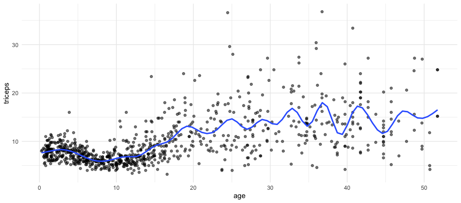 Clearly the curve seems to be overfitting the data.
We will use a similar idea to the one used in regularisation (module 4). We select many knots but penalise for the roughness of the fitting.
Remember that the 1st derivative indicates the slope of the curve and the second derivative is the speed of change of the slope. Thus, the second derivative of a curve is associated with the roughness of the curve.
We will then use the second derivative as the penalisation term in the residual sum of squares.
\(\sum_{i=1}^{n} (y_i-f(x_i))^2 + \lambda \int f''(t)^2 dt\)
The result is a smoothing spline. For smoothing splines, the number of knots is not as important given that the penalisation term will handle the roughness.
The animation below, shows the fitting of smoothing splines, with
amounts of penalisation (lambda), and automatic choice of number of knots
given by the smooth.spline function in R. The cross validated MSE is also
shown.
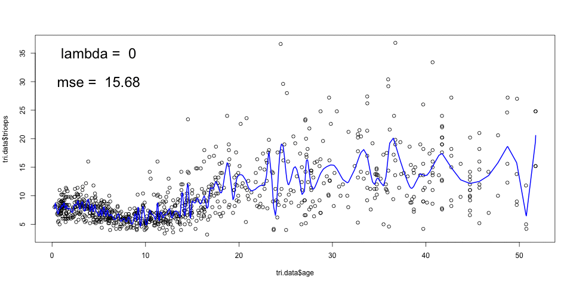
A large \(\lambda\) results in a smooth curve (a straight line in the limit) and a smaller \(\lambda\) leads to a more rough curve. The optimal \(\lambda\) can be chosen by cross-validation.
The smoothing splines can be incorporated in the generalised linear models framework which is usually referred as generalised additive models (GAM). Rather than a linear effect of a predictor, we can have a smoothing spline modeling the association of the predictor with the outcome:
\(g\left(E(y|\mathbf{x} ) \right) = \beta_0 + f_1(x_{1}) + f_2(x_{2}) + ... + f_k(x_{k})\)
Notice that \(f_p(x_p)\) can be a linear function \(\beta_p x_p\) and if all \(f\)’s are linear function, the model above is a GLM.
3.2 Readings
Read the following chapters of An introduction to statistical learning:
- 7.5 Smoothing Splines
- 7.7 Generalised Additive Model
3.3 Practice session
Task 1 - Fit a smoothing spline
We will continue the example using the dataset tricepsavailable in
the MultiKink package. The data contains the measurement of the triceps
skin fold of 892 females (variable triceps) and we want to model
its association with age, using smoothing cubic splines.
The function smooth.spline() fits smoothing cubic splines. We can provide the
penalisation and/or number of knots, df, or just use the defaults.
library(splines)
library(MultiKink) #for the data
library(ggplot2) #for the plots
set.seed(1974) #fix the random generator seed
data("triceps") #load the dataset triceps
#notice that the variable of interest
#it is also called triceps. Don't get
#confused!
#smooth spline with automatic number of knots chosen
#and penalisation chosen by leave-one-out CV (this is the
#option cv=T, otherwise generalized’ cross-validation is used)
sspline <- smooth.spline(triceps$age,
triceps$triceps,
cv=TRUE) ## Warning in smooth.spline(triceps$age, triceps$triceps, cv = TRUE): cross-validation with non-unique 'x' values seems
## doubtful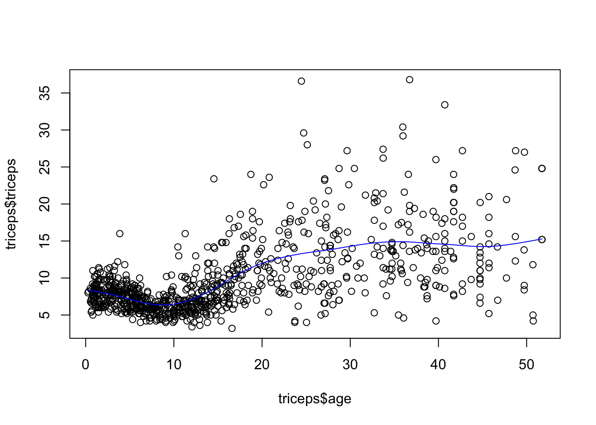
*Note: The generalised cross-validation (default), in this case, selects a very low value for \(\lambda\) which results in under smoothing. It is not clear why that is the case.
Let’s get the triceps predicted value for the ages of 10 and 30
## $x
## [1] 10 30
##
## $y
## [1] 6.470573 14.290032The predicted values are 6.4705727 and 14.2900322, respectively.
As mentioned before, we could have chosen the amount of penalisation and this would lead to a different smoothing. For example, for
sspline <- smooth.spline(triceps$age,
triceps$triceps, lambda=.0001)
plot(triceps$age, triceps$triceps)
lines(sspline, col="blue")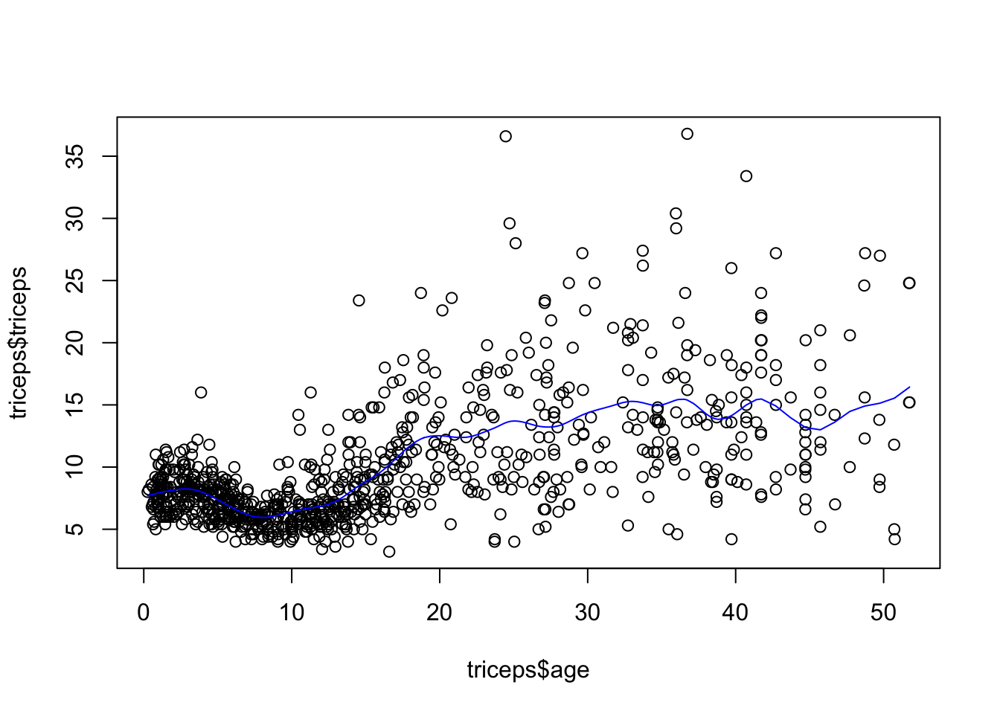
TRY IT YOURSELF:
- Fit smoothing splines with df=19 and df=30 and compare them with the one above. Comment on the results.
See the solution code
sspline <- smooth.spline(triceps$age,
triceps$triceps, lambda=.0001)
sspline19 <- smooth.spline(triceps$age,
triceps$triceps, df=19)
sspline30 <- smooth.spline(triceps$age,
triceps$triceps, df=30)
plot(triceps$age, triceps$triceps)
lines(sspline, col="blue")
lines(sspline19, col="red")
lines(sspline30, col="green")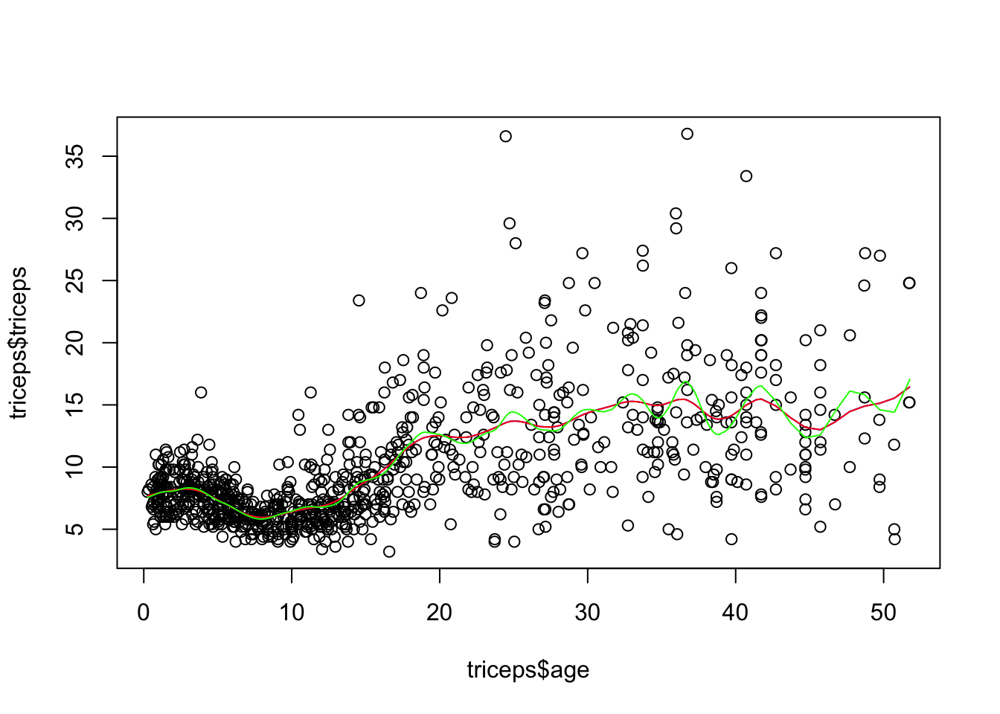
The spline with df=19 corresponds to having a lambda=.0001, so the result is the
same. If you run sspline and sspline you can see that the parameters are
similar.
The spline with df=30 will be more flexible (more rough).
Task 2 - Fit an additive model
The dataset bmd.csv contains 169 measurement of bone mineral density (variable bmd) in men and women of different age. We want to fit a model for bmd using age, sex and bmi as predictors.
#read the data and compute BMI
bmd.data <-
read.csv("https://www.dropbox.com/s/c6mhgatkotuze8o/bmd.csv?dl=1",
stringsAsFactors = TRUE)
bmd.data$bmi <- bmd.data$weight_kg / (bmd.data$height_cm/100)^2We will use the function gam() from the mgcv library. Notice that there is
another gam function from the gam package (from the help file: “Note that this version of gam is different from the function with the same name in the R library mgcv, which uses only smoothing splines with a focus on automatic smoothing parameter selection via GCV.”)
The function s() within the model indicates that we want to smoothing spline
for that predictor. There are several types of splines implemented in the
function. We will use the option basis spline equal to cubic regression splines:
bs="cr". The function s() has similarities to the smooth.spline() but
is implemented
#libraries that we will need
library(mgcv) #package for gam
set.seed(1974) #fix the random generator seed
bmd.gam <- gam(bmd ~ s(age, bs="cr")+ s(bmi, bs="cr") + sex, data=bmd.data)
summary(bmd.gam)##
## Family: gaussian
## Link function: identity
##
## Formula:
## bmd ~ s(age, bs = "cr") + s(bmi, bs = "cr") + sex
##
## Parametric coefficients:
## Estimate Std. Error t value Pr(>|t|)
## (Intercept) 0.74193 0.01456 50.97 < 2e-16 ***
## sexM 0.08092 0.02064 3.92 0.000131 ***
## ---
## Signif. codes: 0 '***' 0.001 '**' 0.01 '*' 0.05 '.' 0.1 ' ' 1
##
## Approximate significance of smooth terms:
## edf Ref.df F p-value
## s(age) 1.035 1.070 17.65 3.02e-05 ***
## s(bmi) 5.687 6.611 10.09 < 2e-16 ***
## ---
## Signif. codes: 0 '***' 0.001 '**' 0.01 '*' 0.05 '.' 0.1 ' ' 1
##
## R-sq.(adj) = 0.381 Deviance explained = 40.9%
## GCV = 0.018099 Scale est. = 0.017165 n = 169The effective number of degrees of freedom for age is approximately 1, which suggests that the effect of age is linear. We can plot the fitted splines for each predictor. Notice, however, that the plot is not in the original scale.
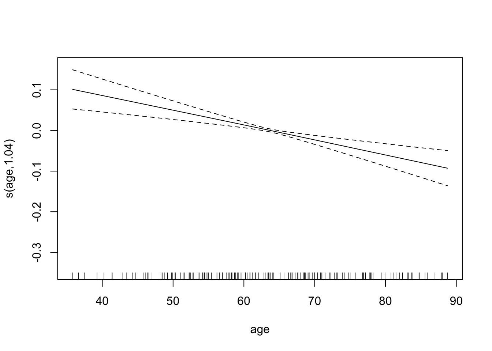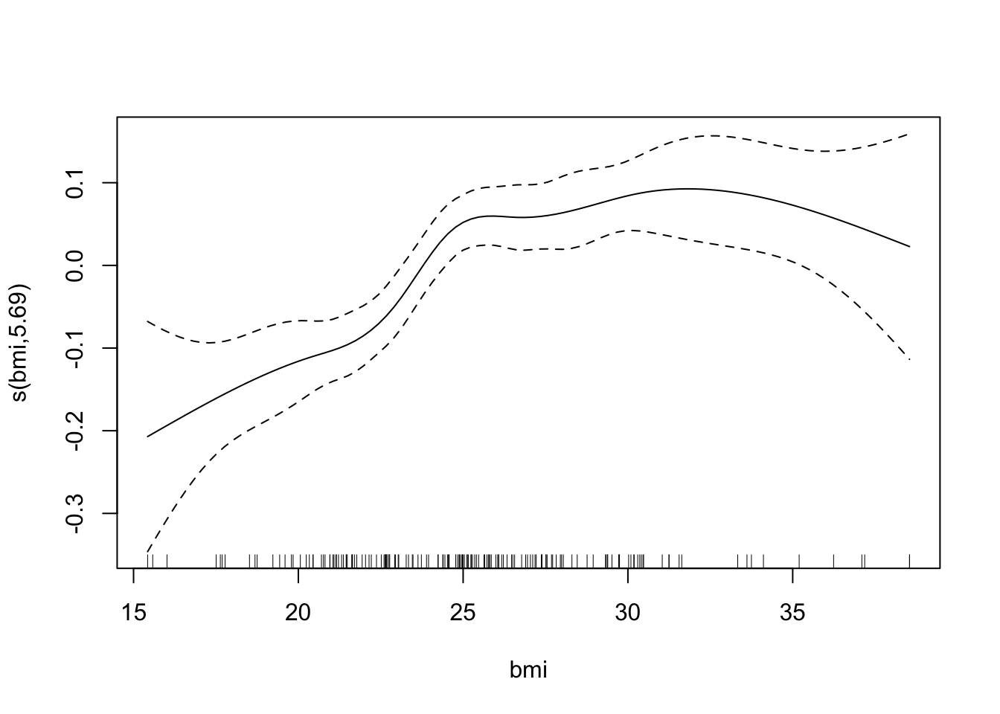
We can also plot the surface fitted for each sex. For example, for women,
# Let's create a grid to be used in persp()
steps <- 60
age <- with(bmd.data,
seq(min(age), max(age),
length = steps) )
bmi <- with(bmd.data,
seq(min(bmi), max(bmi),
length = steps) )
newdat <- expand.grid(age = age, #grid
bmi = bmi,
sex="F")
bmdpred <- matrix(predict(bmd.gam, newdat),
steps, steps) #predictions
# Now plot it
p <- persp(age, bmi,
bmdpred,
theta = 65, #angle of the perspective
col = "green")
# To add the points, you need the same 3d transformation
obs <- with(bmd.data[bmd.data$sex=="F", ],
trans3d(age, bmi, bmd, p))
pred <- with(bmd.data[bmd.data$sex=="F", ],
trans3d(age, bmi, fitted(bmd.gam)[bmd.data$sex=="F"], p))
# Add segments to show the points and where they are in 3d
points(obs, col = "red", pch = 16)
segments(obs$x, obs$y, pred$x, pred$y)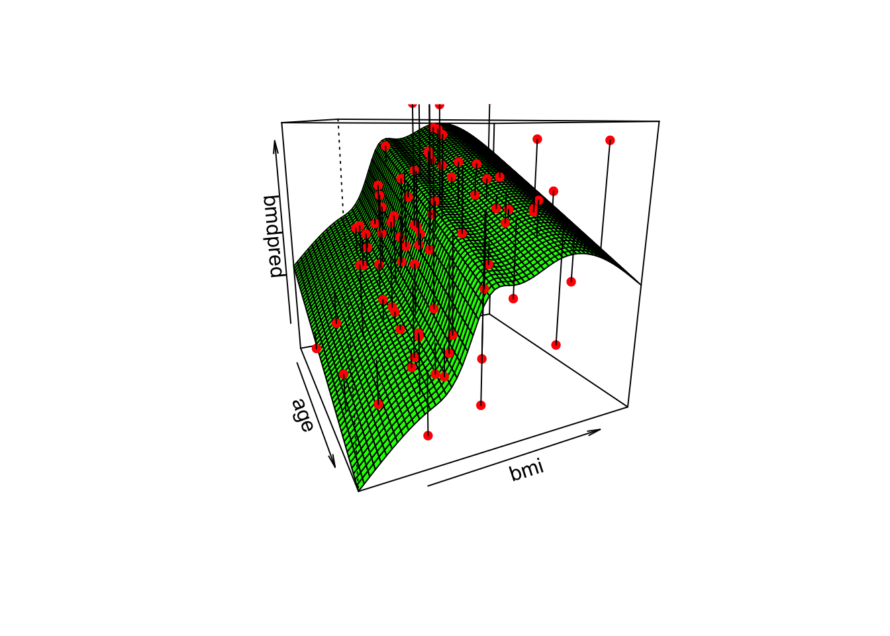
TRY IT YOURSELF:
- How would the plot for sex=M compare to the surface above?
See the solution code
The surface would have exactly the same shape but would be separated by the 0.08 units (estimate for the variable sex in the model)
- Fit a linear model with the same variables and compare the AIC of the linear model with the previous GAM model
See the solution code
The GAM model seems to fit better because it has a lower AIC.
3.4 Exercises
Solve the following exercise:
- The dataset SA_heart.csv contains on coronary heart disease status (variable chd) and several risk factors including the cumulative tobacco consumption tobacco, systolic sbp, and age
- Fit a GAM logistic model for chd with splines for the predictor tobacco,sbp and age
See the solution code for a)
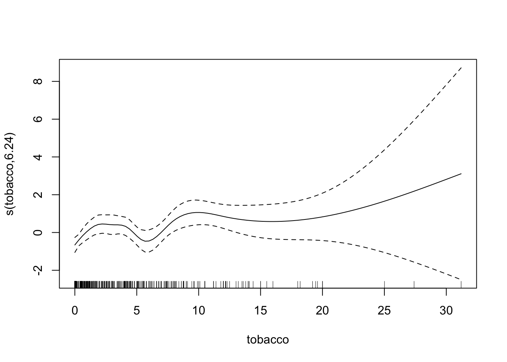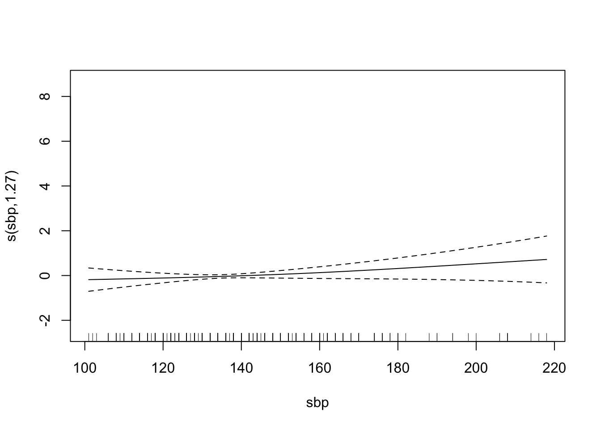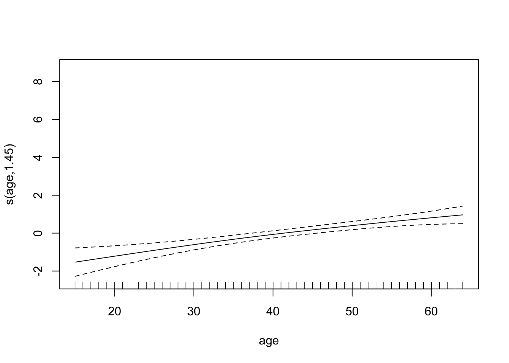
Find the AUC ROC for the model above.
Compare the AUC ROC of the GAM model with a logistic regression with linear effects for the predictors.
- The dataset fev.csv contains the measurements of forced expiratory volume (FEV) tests, evaluating the pulmonary capacity in 654 children and young adults.
Plot the association between fev and height and fit a smoothing spline for fev using height as a predictor
Plot the association between fev and age and fit a smoothing spline for fev using age as a predictor
Fit a GAM model for fev with smoothing slipes for height and age and also add sex to the model.
Comment in the results of the fitted GAM model and plot the fitted splines for the predictors